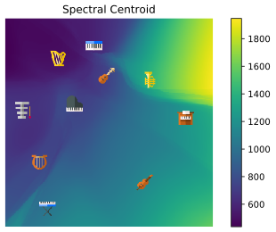

Neural Music Synthesis
Jong Wook Kim @ MiQ
jongwook@nyu.edu
About the MiQ Lab
Understanding music at scale to enhance the Spotify platform. Visit
miq.spotify.net!
- Content Description: rhythm, melody, structure, instrument, language, etc.
- Audio Processing: auto-mixing, karaoke, style transfer, etc.
- Audio Marketplace: skip minimization, originality estimation, etc.
Motivation and Background
- We want to be able to convert audio into disentangled semantic information and vice versa:

- End-to-end neural speech synthesis using WaveNet1 produces near-perfect sound
- WaveNet is successfully applied in musical note synthesis3 and music translation6
Autogressive Music Synthesis using WaveNet

-
Built real-time audio synthesis using
nv-wavenet,
NVIDIA's official WaveNet implementation, following Deep Voice2.
-
Implemented a CGI server that can run WaveNet inference and stream the audio to the browser in real-time.
Dataset
-
334 MIDI files of classical piano music crawled from www.piano-midi.de
-
Synthesized clean audio for training, using the default soundfont of MuseScore
Methodology
Overall Architecture

- MIDI data and instrument information are combined to predict 80-dim Mel spectrogram
- WaveNet synthesizes music, by conditioning on the predicted Mel spectrogram
The Onsets and Frames Salience Representation
-
Inspired by the onsets and frames paper5, the input has 2 \(\times\) 88 channels,
where the first 88 indicate the onset timings and the last 88 indicate the frames.
-
The input matrix is sparse, and the nonzero elements contain the MIDI velocity.

FiLM Layer for Timbre Conditioning
-
FiLM layers4 allow the network to take side information
-
FiLM layers learn the functions \(f\) and \(h\) which take the
conditioning input (in our case, the timbre embedding) and
produce the affine transformation parameters:
\[
\gamma_{i, c} = f_c ( \mathbf{x}_i ), ~~~~ \beta_{i, c} = h_c ( \mathbf{x}_i ).
\]
-
The features \(\mathbf{F}_{i, c}\) are then transformed element-wise:
\[
\mathrm{FiLM}(\mathbf{F}_{i,c} | \gamma_{i, c}, \beta_{i, c})
= \gamma_{i,c} \mathbf{F}_{i, c} + \beta_{i, c}.
\]
Results
Generated Mel Spectrograms
Reconstruction Accuracy w.r.t. Loss Functions and Instruments

- significant degradation at each stage (Mel prediction, WaveNet, µ-law)
- Reconstruction is generally better at higher frequencies
- Accuracy depends on both timbre and frequency
Embedding Space Visualization


Mean Opinion Scores of Synthesis
| Condition |
Scores \(\pm\) SEM |
Condition |
Scores \(\pm\) SEM |
| Original |
\(4.316 \pm 0.041 \) |
tanh-log-abs MSE |
\(3.183 \pm 0.056 \) |
| mu-law Only |
\(3.879 \pm 0.051 \) |
log-abs MSE |
\(3.011 \pm 0.058 \) |
| Ground-Truth Mel |
\(3.378 \pm 0.052 \) |
abs MSE |
\( 2.757 \pm 0.058 \) |
Conclusions
- Built a model which combines RNN and WaveNet to synthesize polyphonic music from MIDI score and instrument information.
- Can interpolate between instruments in the embedding space, making interesting sounds
- The embedding space captures the distribution of timbre, such as spectral centroid and mean energy
Future Work
Upcoming Blog & Paper
- Ablation study for architecutre variations: number of FiLM and Conv layers, activations, etc.
- Embedding space visualization for 100+ instruments
- ClariNet7: continuous and paralllelizable WaveNet based on Gaussian IAF
Further Research Directions
- Learning the inverse of the network, for music transcription
- Using GAN to generate higher-dimensional representations for better synthesis
- Oord, A. V. D., Dieleman, S., Zen, H., Simonyan, K., Vinyals, O., Graves, A., ... & Kavukcuoglu, K. (2016). Wavenet: A generative model for raw audio. arXiv preprint arXiv:1609.03499.
- Arik, S. O., Chrzanowski, M., Coates, A., Diamos, G., Gibiansky, A., Kang, Y., ... & Sengupta, S. (2017). Deep voice: Real-time neural text-to-speech. arXiv preprint arXiv:1702.07825.
- Engel, J., Resnick, C., Roberts, A., Dieleman, S., Eck, D., Simonyan, K., & Norouzi, M. (2017). Neural audio synthesis of musical notes with wavenet autoencoders. arXiv preprint arXiv:1704.01279.
- Perez, E., Strub, F., De Vries, H., Dumoulin, V., & Courville, A. (2017). Film: Visual reasoning with a general conditioning layer. arXiv preprint arXiv:1709.07871.
- Hawthorne, C., Elsen, E., Song, J., Roberts, A., Simon, I., Raffel, C., ... & Eck, D. (2017). Onsets and frames: Dual-objective piano transcription. arXiv preprint arXiv:1710.11153.
- Mor, N., Wolf, L., Polyak, A., & Taigman, Y. (2018). A Universal Music Translation Network. arXiv preprint arXiv:1805.07848.
- Ping, W., Peng, K., & Chen, J. (2018). ClariNet: Parallel Wave Generation in End-to-End Text-to-Speech. arXiv preprint arXiv:1807.07281.